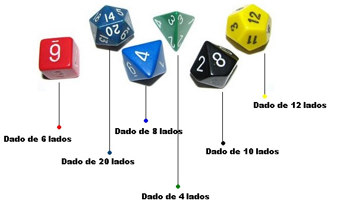

Para facilitar navegação, recomenda-se que se faça uma página inicial com um link para cada uma das respostas dos exercícios.
Faça uma página em html sobre sua banda favorita. Nela, sua index.html (sua página inicial deve ter esse nome) deve ter informações da banda (ano de criação, gênero musical, número de albuns, etc.
Nela, também deve ter uma foto de cada um dos integrantes. Essa foto deve ter um link para que quando clicar-se na imagem, isso leve a gente para uma página
numa nova aba com as informações desse artista (idade, instrumento tocado, sexo, etc.). Além disso, no começo da página deve existir um 'index' com links
internos para cada um dos músicos.
João, Ana e Pedro querem jogar um jogo de azar. Nesse jogo, cada um roda um dado de 6 lados e, quem tiver o maior número ganha. Mas eles estão sem dinheiro
para comprar dados, eles só têm um computador, mas eles não sabem programar. Ajude eles! Faça uma página com três botões, um para cada jogador, que quando clicado
gera um número aleatório entre 1 e 6 e mostre o resultado para eles. Além disso, faça uma parte da página mostrar quem foi o vencedor ou se foi empate.
Enfim, crie um botão para resetar todas as informações e um botão para cada dado para zerar o valor de cada jogador. Caso apenas dois jogadores quiserem
jogar, o site deve mostrar quem do mesmo jeito.
Para este exercício, crie uma página da web em forma de formulário que receba 2 números e deixe o usúario escolher qual operação ele quer fazer. A implementação
do seletor de operação fica a seu critério como vai funcionar. O resultado deve ser mostrado no final da página.
João, Ana e Pedro cresceram! Agora, eles deixaram de jogar jogo de azar e vão jogar RPG! Mas eles continuam sem dinheiro para dados.
Crie uma página na qual eles escolhem qual o valor máximo que pode sair no dado. Depois, eles apertam um botão e geram um número aleatório entre
1 e o número digitado por eles. O resultado deve ser mostrado na tela. Além disso, crie botões que definam o número máximo como um dos dados padrões de
RPG (d2, d4, d6, d8, d10, d12, d20, d100). Além disso, crie um botão para gerar um número múltiplo de 10 entre 00 e 90 (d10x10).
Sua mãe chega frustada em casa. Ela foi no supermercado, mas tinha perdido a lista de compras. "Ahhhh, se tivesse uma maneira de eu salvar isso em algum lugar sem precisar de papel!"
ela fala. Ajude sua mãezinha querida! Faça uma página na internet com um formulário que receba quantidade e qual o item para comprar no supermercado. Toda vez que colocar-se um novo
item, ele deve ser colocado numa lista não ordenada para gerar a lista de compras da sua mãezona!
Sua escola está fazendo uma competição de MárioKart! Você e seus 4 amigos decidem apostar um pastel e um refri pra quem ganhar, pago pelos perdedores. Você tem tanta certeza que vai ganhar
de lavada que decidiu fazer um site para vcê preencher as informações de nome, personagem (Mario , Luigi, Peach, Bowser, Toad ou Yoshi) e número de vitórias de cada uma e depois mostrar
numa tabela o placar final para poder mangar mais fácil deles.
Atenção! Exercício Avançado! Só hackers fazem!
Sua escola está fazendo uma competição de MárioKart! De novo! Seus professores viram o placar que você fez na compatição anterior e viram como você programa
MUITO bem. Eles te pedem para fazer uma página na internet que receba o nome dos jogadores, o personagem que ele está jogando (Mario , Luigi, Peach, Bowser, Toad ou Yoshi) e a pontuação
para poder criar um placar dos jogadores e mostrar quem é o vencedor, com a imagem de seu personagem do lado (pode usar imagens da internet). Você sabe que o número máximo de jogadores
na competição é 32, mas podem ter menos. Se houver empate, a pessoa que for inserida primeiro deve ficar na frente (injusto mas é isso aí ¯\_(ツ)_/¯).
Sugestão: Bubble sort e vetores em JavaScript. É bastante avançado.